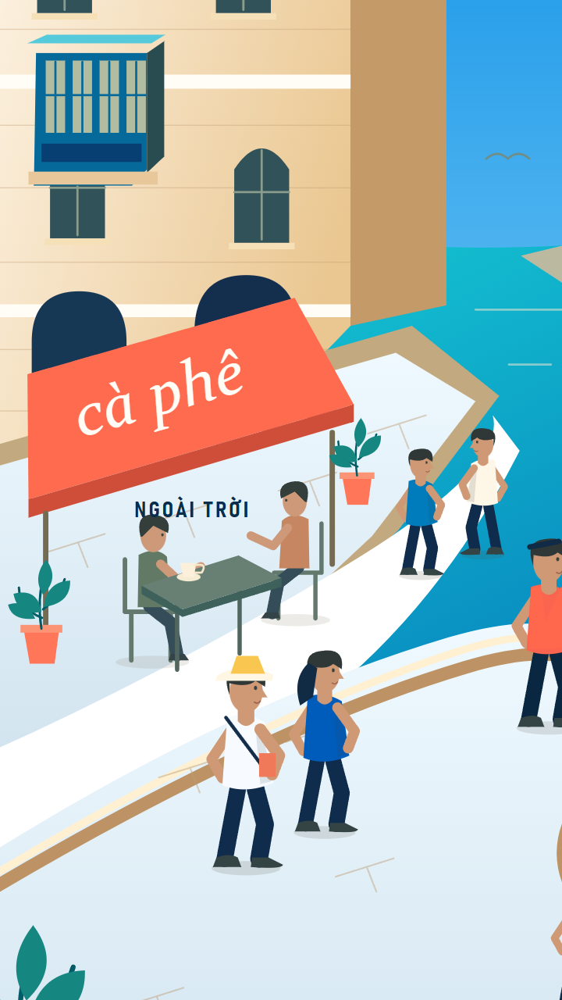
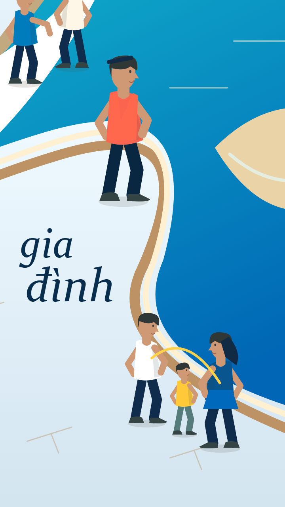
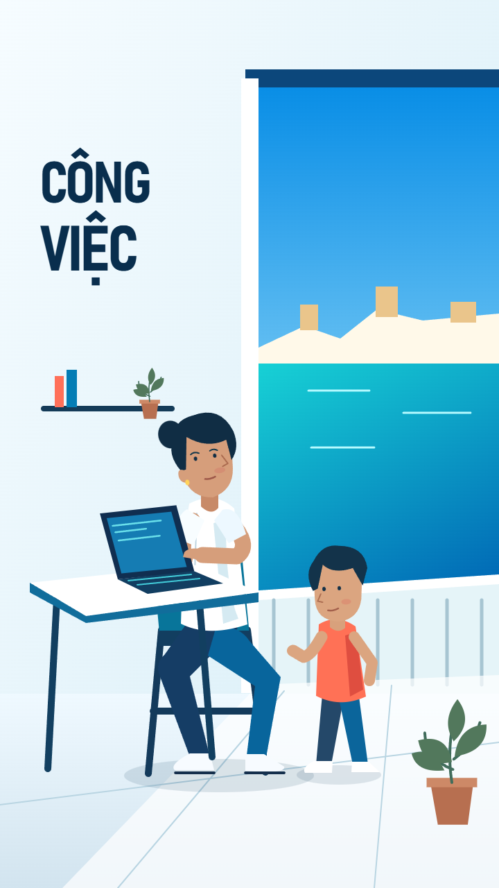
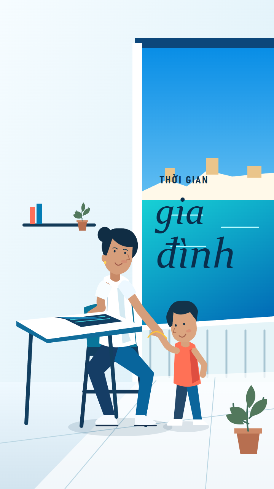

VIDEO-34 · Typography study 01 · Static design only
Chữ tham gia vào bố cục.
Bahnschrift đậm cho hành động / Constantia Italic cho nhịp café và gia đình. Không phủ navy, không underline lặp lại. Các khung này đề xuất bố cục và trạng thái chữ; chưa dựng animation, chưa sửa pilot.
S03
Đi bộ — chữ đặt trên mặt lối dạo, tiếp nối hướng bước chân

Cà phê ngoài trời — chữ nghiêng gắn vào mái hiên café

Gia đình — chuyển sang nét chữ mềm, cạnh nhóm nhân vật
S08

Công việc — chữ theo mảng tường phía bàn làm việc
Thời gian — trọng tâm chữ chuyển sang không gian ngoài trời

Gia đình — chữ kết ở vùng biển, để trống gương mặt và bàn tay
S08: đề xuất bỏ bức tranh trên mảng tường dùng cho chữ. Font được lấy từ Windows hiện có và kiểm tra đủ glyph tiếng Việt; chỉ dùng trong study local. Các vị trí/phong cách này đang chờ phản hồi, chưa phải approval hay pilot mới.